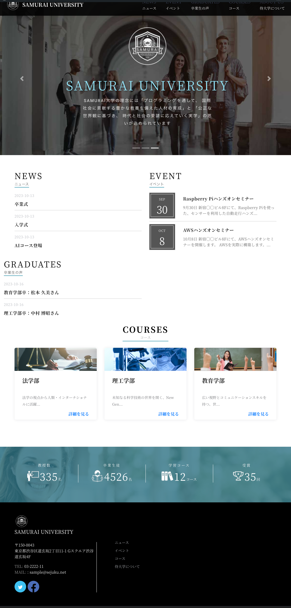

大学のHPとなります。
URL
https://university.samusei.com/
ユーザー名:viewer
パスワード:viewer
担当
WordPress構築・コーディング
サイトの目的
大学の紹介
使用技術
WordPress/PHP
コーディングについて
オンラインスクールよりデータを提供して頂き、wordpress化させて頂きました。
indexなどのHTMLをPHP化をし、トップページのニュース・イベント・卒業生の声・コースの一覧ページ・それらの投稿ページなどの実装を学びました。
投稿機能でニュースを作成またイベントも投稿機能のカスタムフィールドも使用して作成、それを一覧表示させるためにget_posts()で引数に指定した投稿データを取得し、ループ処理その後wp_reset_postdata()を呼び出して、使用した投稿データをリセットするという一連の流れを知ることができました。
コース一覧ページには「Custom Post Type UI」というプラグインを使用しています。また侍大学についての固定ページで作成したのは「Spectra - WordPress Gutenberg Blocks」というプラグインを使用しています。